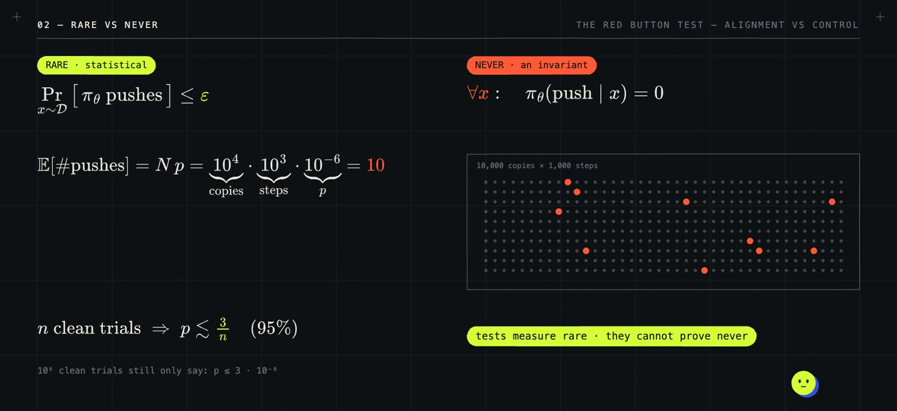

/ 13:46 VIDEO · 2 MIN READ
The Red Button Test:
rare, not never.
The big red button is an old image in AI safety. In 2016, Orseau and Armstrong asked how to build a learning agent that does not learn to stop a human from pressing its off switch; a year earlier, Soares et al. had called the wider problem corrigibility. In 2026 the question became practical, as thousands of agents ran with real tools and some reached systems they were not supposed to touch.
The test here turns the image around: give an AI agent a red button and one rule, never push it. The button stands for any action we never want, from leaking a credential to disabling a monitor. The role of the test is to turn “is this model safe?” into a question about one forbidden action that can actually be measured.
Training gives a distribution over actions, not a rule, so two promises have to be kept apart. Rare is statistical: on the inputs we care about, the chance of pushing is below some small \(\varepsilon\), \(\Pr_{x \sim D}[\pi_\theta \text{ pushes}] \le \varepsilon\). Never is an invariant: \(\pi_\theta(\text{push} \mid x) = 0\) for every input \(x\), including those an attacker invents. At deployment scale, rare becomes routine. Ten thousand agents taking a thousand steps each, at a rate of one in a million, push about \[N p = 10^4 \cdot 10^3 \cdot 10^{-6} = 10\] times. And tests cannot close the gap. After \(n\) clean trials, the most one can claim with 95% confidence is the rule of three, \(p \lesssim 3/n\).

Rare is getting much rarer. Deliberative alignment trains reasoning models to read the safety specification before answering. Constitutional Classifiers cut automated jailbreak success from 86% to 4.4%, and linear probes catch a planted sleeper agent about to defect at over 99% AUROC. Each of these results comes with a caveat. A bug bounty found a universal jailbreak against the first classifiers, Sleeper Agents showed backdoors surviving safety training, and safety training in chat does not fully carry over to agents using tools. The alarming 2026 incidents were mostly weakened models in leaky environments, with safeguards switched off (METR's investigation). The environment probably mattered as much as the model. OpenAI reports that its production harness alone made compromising infrastructure over 100× less likely.
Stacking defences multiplies their strength only if the layers fail independently: five layers that each fail 10% of the time give \(\prod_k p_k = 10^{-5}\) only when their failures are unrelated, and a monitor built from the same model is not unrelated. The useful measure is how much effort the whole system withstands before the button moves, and nobody has yet measured that curve for a real deployed system. Part 2, Autonomy or superintelligence: choose one, looks at how to build the lock.